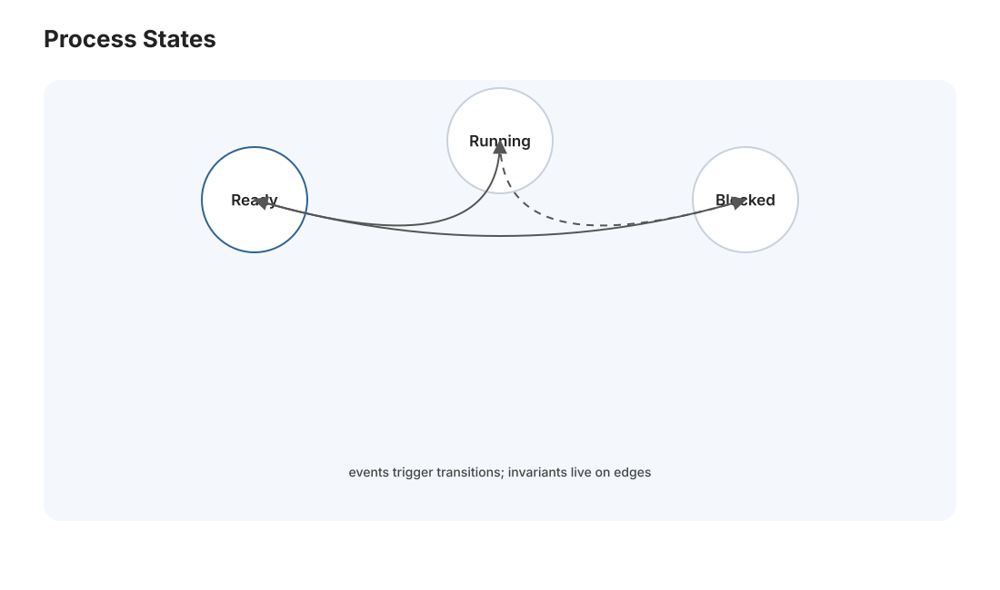
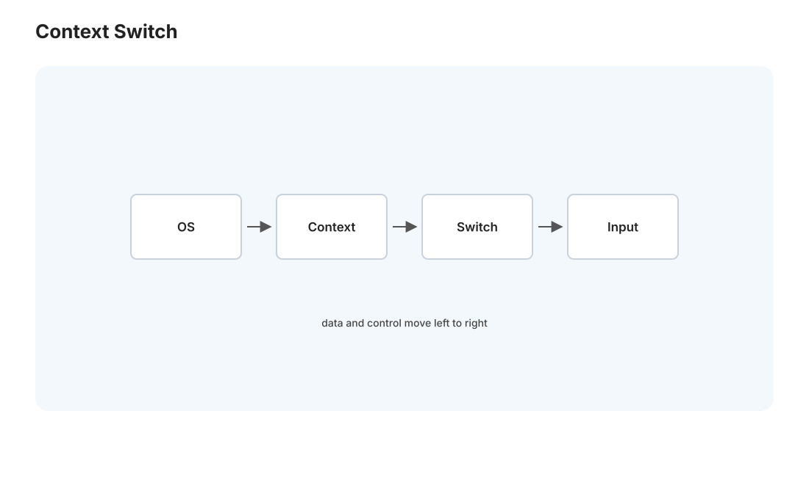
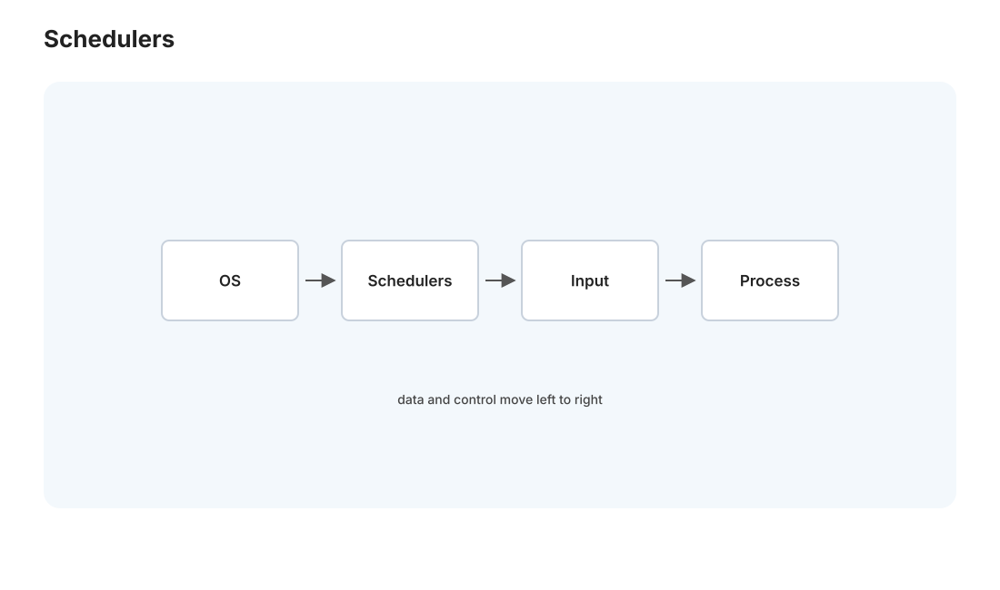

本页目录
操作系统 I · 进程、线程与调度
对标：MIT 6.S081 / OSTEP（Operating Systems: Three Easy Pieces）虚拟化篇 ｜ 前置：csapp-03/04（ECF、虚拟内存） 操作系统是"管理硬件、给程序造幻觉"的软件。OSTEP 把 OS 的全部内容归纳成三个主题——虚拟化、并发、持久化。本页开虚拟化中的 CPU 虚拟化：一个（或几个）CPU 怎么让几百个进程都以为自己在独占运行。这是调度、上下文切换、以及"你的电脑同时开一堆程序不卡死"的原理。
1. 进程抽象与状态机

进程 = 一个运行中的程序的完整上下文：地址空间（csapp-04）+ 寄存器 + 打开的文件 + 内核记账信息（PCB，进程控制块）。操作系统用进程状态机管理每个进程：
运行（running）→ 就绪（ready）→ 阻塞（blocked） 三态循环——正在用 CPU / 等着用 CPU / 等 I/O（读磁盘、等网络）。调度器的工作就是在时钟中断时，从就绪队列挑一个进程换上 CPU（🔗 csapp-03 上下文切换）。
进程 vs 线程：进程之间地址空间隔离（安全但通信贵）；线程是同一进程内的多个执行流，共享地址空间（通信是直接读写共享内存，快，但——正因为共享——引出 os-02 的全部并发噩梦）。"进程是资源容器、线程是调度单位"，一句话记住分工。
2. 上下文切换：幻觉的引擎

机制：时钟中断周期性触发（如每 10 ms）→ 陷入内核 → 内核保存当前进程的寄存器到它的 PCB → 载入下一个进程的寄存器 → 返回用户态。切换的是寄存器和页表基址——CPU 从此"变成"另一个进程。切得足够快（毫秒级），用户就感觉所有程序在同时跑，这就是时分复用造出的并发幻觉。
成本：切换本身要花时间（保存/恢复状态），更隐蔽的是缓存和 TLB 被污染（新进程的数据把旧进程的挤出缓存，🔗 csapp-02）——所以切换太频繁反而慢。这是"进程隔离"的代价，也是为什么高性能服务偏爱少量线程 + 异步（web-02 会讲事件循环）。
3. 调度：CPU 时间怎么分

就绪队列里多个进程，先跑谁、跑多久？调度目标常常互相冲突：吞吐量 vs 响应时间 vs 公平 vs 无饥饿。经典算法拾级而上：
- FIFO：先来先服务——简单，但一个长任务堵住所有短任务（护航效应）。
- SJF / STCF（最短作业优先）：优化平均周转时间——但要预知运行时间、且长任务饿死。
- 轮转（Round Robin）：每进程给一个时间片轮流跑——优化响应时间，公平，但纯 RR 对 I/O 密集型不友好。
- 多级反馈队列（MLFQ）：不需预知运行时间就近似 SJF——新任务进高优先级队列，用完时间片就降级。于是交互型（频繁让出 CPU 等输入）留在高优先级、CPU 密集型沉底——自动区分两类任务。这是真实 OS（早期 Unix、Windows）调度器的核心思想。
- CFS（完全公平调度，Linux 现役）：用虚拟运行时间记每个进程已用的 CPU，总是调度虚拟时间最少的——用红黑树维护，\(O(\log n)\)。"公平"被形式化成'让每个进程的已用时间尽量相等'。
读法：调度是一个没有完美解的多目标权衡——这也是为什么至今还在演进（近年的 EEVDF 取代 CFS）。理解 MLFQ 的"用行为推断类型"思想，比记住任何单一算法都有用。
4. 用户态 / 内核态与系统调用（复习 + 深化）
进程无权直接碰硬件——CPU 有特权级（用户态 / 内核态）。想读文件、开进程、分配内存，必须通过系统调用（csapp-03 的陷阱）陷入内核。这个边界是操作系统所有保护的根：坏程序最多搞坏自己，碰不到内核和别的进程。"受限直接执行（limited direct execution）"是 OS 的中心设计——让进程直接在硬件上跑（快），但在关键处（系统调用、时钟中断）夺回控制（安全）。
5. 练习与要点
例 1（调度手算） 三个任务到达时间与长度给定，分别用 FIFO / SJF / RR 算平均周转与响应时间——亲手看到"没有一个算法在所有指标上最优"，理解权衡的不可避免。
例 2（护航效应） 一个 100ms 的 CPU 任务前面排着，后面 3 个 1ms 的交互任务在 FIFO 下要等多久？换 RR 呢？这解释了"为什么一个卡住的程序会让整个系统发顿"以及时间片的意义。
例 3（进程还是线程） 设计一个网页服务器：每请求开进程还是开线程？权衡隔离（进程强）vs 开销与通信（线程省）——这正是 web-02 服务器架构的第一个设计决策，先在这里想清楚 trade-off。\(\blacksquare\)
📋 大 Project P01（第一阶段）· xv6 系统调用与进程
教师版作业说明书，不提供完整解。 xv6 是 MIT 6.S081 用的教学版 Unix，麻雀虽小五脏俱全。P01 分三阶段随 os-01/02/03 展开，目标是让学生亲手改过系统调用、调度、锁、文件系统与虚拟内存。
P01-A · 系统调用与进程 - 学习目标：理解一次系统调用从用户态 wrapper 到 trap、
syscall()分发、内核实现、返回用户态的全链路；理解进程表、调度器与时间片。 - 教师提供：xv6-riscv 基线、make grade公共测试、user/trace.c与user/sysinfotest.c的测试骨架、一个可重复的 CPU-bound / I/O-bound 调度 benchmark。 - 学生任务：① 实现trace(mask)，按 bitmask 打印指定系统调用轨迹；② 实现sysinfo，报告空闲内存与进程数；③ 增加setpriority(pid, prio)并把默认 RR 扩展成简单优先级调度，要求保留无饥饿策略（如 aging）。 - 接口约束：不得改变已有用户程序 ABI；新增系统调用必须补齐user/user.h、user/usys.pl、kernel/syscall.h；调度修改不得破坏sleep/wakeup语义。 - 验收测试：usertests全过；trace 输出顺序和 syscall 名称正确；sysinfo在 fork/exit 前后计数变化正确；benchmark 中高优先级任务获得更低响应时间，低优先级任务最终仍能运行。 - 评分重点：系统调用链路 35%，进程/调度正确性 35%，自写测试 15%，代码解释与设计报告 15%。 - 延伸挑战：实现 MLFQ，记录每个进程的虚拟运行时间，并比较 RR / priority / MLFQ 的响应时间与公平性。
下一页：操作系统 II——并发与同步：共享内存的多个线程如何不打架，锁、条件变量、死锁与它们的理论。